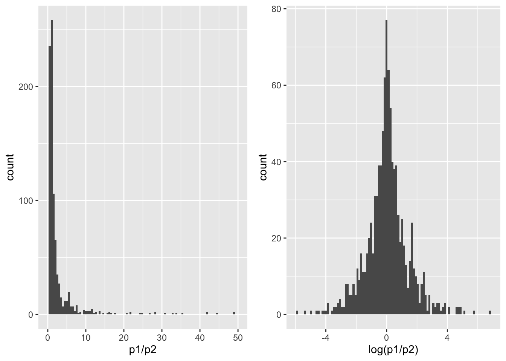

Risico relatie
Een risico op een aandoening kan vaak ingeschat worden als een kans, waarbij we beroep kunnen doen op de prevalentie en incidentie. Wanneer we weten dat de prevalentie van lage rugpijn 50% is, dan is binnen de populatie de kans dat iemand lage rugpijn heeft 50%. De prevalentie (en de incidentie) kan dus gezien worden als een risico op lage rugpijn. Om een risico op een binaire gebeurtenis (waarbij het optreden van bijvoorbeeld lage rugpijn vaak gecodeerd wordt als 1 en het niet optreden van lage rugpijn als 0) statistisch te beschrijven wordt er vaak gebruik gemaakt van twee statistische grootheden, een risico en een odds.
Risico en risico ratio (RR)
Gegeven is de volgende dataset tevreden met informatie over een bevraging bij kinesitherapeuten over hun tevredenheid van honoraria.
- \(Y\): tevredenheid (0-niet tevreden; 1-tevreden)
- \(X\): leeftijd (in categorieën)
We beschikken in deze specifieke steekproef over een totaal van 9 observaties (\(n = 10\)).
de dataset ziet er als volgt uit:
| X | Y |
|---|---|
| < 40 | 1 |
| < 40 | 1 |
| < 40 | 1 |
| < 40 | 1 |
| < 40 | 0 |
| < 40 | 0 |
| 40+ | 0 |
| 40+ | 0 |
| 40+ | 0 |
| 40+ | 1 |
Om het risico op tevredenheid na te gaan (risico kan ook een positieve quotatie hebben), dienen we te identificeren hoeveel indivduen aangegeven hebben tevreden te zijn over hun honorarium. In deze studie gaven 5 van de 10 therapeuten aan tevreden te zijn. Het risico (of kans) op tevredenheid is in dit geval dus 50 \(\%\).
| 0 | 1 | |
|---|---|---|
| < 40 | 2 | 4 |
| 40+ | 3 | 1 |
Wanneer we het risico in één groep willen uitzetten ten opzichte van een andere groep, kunnen we gebruik maken van het relatieve risico (of risicoratio).
De risicoratio wordt vaak verkozen boven bijvoorbeeld het risicoverschil, aangezien een klein risico verschil een grote impact kan hebben wanneer het bijvoorbeeld een zeldzame aandoening gaat. Stel dat we het effect van een therapie willen nagaan bij een zeldzame aandoening (waarbij de prevalentie \(2 \%\) is). Wanneer onze therapie in staat is de prevalentie te verlagen naar \(1 \%\), waren we in staat om met onze therapie een verschil te bewerkstelligen van \(1 \%\) (risicoverschil). Als we echter kijken naar de risicoratio (relatief risico), dan waren we in staat om de prevalantie te halveren \(\frac{1\%}{2\%} = 0.5\). Wanneer we dezelfde oefening maken voor een ziekte met een hogere prevalentie (\(50\%\)), dan is een effect van \(1\%\) door therapie nog steeds een effect van \(1\%\), maar het relatieve risico is wel gewijzigd naar \(\frac{49\%}{50\%} = 0.98\). Omwille van deze verschillen wordt er vaak verkozen om risico’s te vergelijken op basis van ratio’s in plaats van verschillen.
Om het verschil in risico op tevredenheid tussen jongere en oudere therapeuten in te schatten, dienen we eerst het risico op tevredenheid in elke groep te berekenen. Voor de jongste groep < 40 is het risico \(\frac{4}{6} = 66.7 \%\), terwijl voor de oudere groep 40+ het risico \(\frac{1}{4} = 25.0 \%\) is. De risico ratio of relatieve risico (RR) voor tevredenheid in de jongere t.o.v. de oudere groep kan dan geschat worden door \(\frac{0.667}{0.250} = 2.67\). De RR is direct en letterlijk interpreteerbaar als een toegenomen risico op tevredenheid waarbij het risico bij kinesitherapeuten jonger dan 40 jaar 2.6 keer hoger is dan in de groep 40 jaar of ouder.
Odds en odds ratio (OR)
Om de odds en odds ratio (OR) te berekenen gebruiken we dezelfde dataset:
| X | Y |
|---|---|
| < 40 | 1 |
| < 40 | 1 |
| < 40 | 1 |
| < 40 | 1 |
| < 40 | 0 |
| < 40 | 0 |
| 40+ | 0 |
| 40+ | 0 |
| 40+ | 0 |
| 40+ | 1 |
Om de odds op tevredenheid na te gaan (odds kan ook een positieve quotatie hebben), dienen we te identificeren hoeveel indivduen aangegeven hebben tevreden te zijn over hun honorarium. In deze studie gaven 5 van de 10 therapeuten aan tevreden te zijn. Het risico (of kans) op tevredenheid is in dit geval dus 50 \(\%\). De odds is de verhouding van de kans op het plaatsvinden van een gebeurtenis over de kans dat de gebeurtenis niet plaats vind. De odds wordt berekend door \(\frac{p}{1-p}\) of \(\frac{0.5}{1-0.5} = 1\). De odds op tevredenheid is in dit voorbeeld is dus \(1\), aangezien de kans op een tevreden kinesitherapeut even groot is als de kans op een ontevreden kinesitherapeut.
| 0 | 1 | |
|---|---|---|
| < 40 | 2 | 4 |
| 40+ | 3 | 1 |
Wanneer we de odds in één groep willen uitzetten ten opzichte van een andere groep, kunnen we gebruik maken van de relatieve odds (of odds ratio). Om de OR op tevredenheid van jongere t.o.v. oudere therapeuten in te schatten, dienen we eerst de odds op tevredenheid in elke groep te berekenen. Voor de jongste groep < 40 is de odds \(\frac{4/6}{2/6} = \frac{4}{2} = 2.00\), terwijl voor de oudere groep 40+ de odds \(\frac{1/4}{3/4} = \frac{1}{3} = 0.33\) is. De odds ratio (OR) voor tevredenheid in de jongere t.o.v. de oudere groep kan dan geschat worden door \(\frac{2.00}{0.33} = 6.1\). De OR is moeilijk en niet letterlijk interpreteerbaar aangezien het weergeeft dat de odds bij kinesitherapeuten jonger dan 40 jaar 6.1 keer hoger zijn dan in de groep 40 jaar of ouder.
Odds vs Risico
De OR geeft is stabiel en verondersteld geen oorzaak-gevolg relatie, terwijl de RR verandert wanneer rijen en kollomen (oorzaak-gevolg) verwisseld worden.
Hypothese en sterkte risico-relatie
De hypothese van een OR of RR wordt als volgt geformuleerd:
\(H_0\): Leeftijd is geen risicofactor (RR of OR \(=\) 1) gerelateerd aan de tevredenheid van de therapeut. \(H_1\): Leeftijd is geen risicofactor (RR of OR \(\neq\) 1) gerelateerd aan de tevredenheid van de therapeut.
Een significante risicofactor, wil dus zeggen significant verschillend van 1. Belangrijk om te vermelden is dat een OR (of een RR) \(>\) 1 een hoger risico inhoudt ten opzichte van de referentiecategorie. Een OR (of een RR) \(<\) 1 houdt een lager risico in ten opzichte van de referentiecategorie. Alle ORs (of RRs) groter dan (kleiner dan) één kunnen onderling vergeleken worden qua grootte, maar RRs (of ORs) groter dan één kunnen niet vergeleken met RRs (of ORs) kleiner dan één. Wanneer we de odds ratio’s berekenen van risicofactoren voor blessures bij sporters, vinden we een \(OR_{geslacht:man} = 2\) en een \(OR_{geen \space opwarming} = 8\), dan kunnen we besluiten dat het risico gerelateerd aan een opwarming groter is dan het risico gerelateerd aan geslacht, aangezien \(8 > 2\).
We kunnen de referentiecategorie omdraaien voor een OR of RR door de inverse te berekenen (vb. \(\frac{1}{OR}\) of \(\frac{1}{RR}\)). Zo kan de OR voor geen opwarming versus een opwarming gelijk zijn aan 8 (\(OR_{geen \space opwarming} = 8\)), dan is de OR voor een opwarming tegenover geen opwarming: \(OR_{opwarming} = \frac{1}{8} = 0.125\). Deze nieuwe OR is zoals in voorgaand voorbeeld moeilijk te vergelijken met de \(OR_{geslacht:man} = 2\), aangezien \(0.125 < 2\), maar het risico gerelateerd aan opwarming aanzienlijk groter is.
De odds, OR en RR wordt vaak weergegeven na een log-bewerking (met het natuurlijke logaritme: ln). Deze worden dan de log(odds), log(OR) or log(RR), aangezien we door deze transformatie een normaal verdeling van de uitkomst kunnen krijgen.
